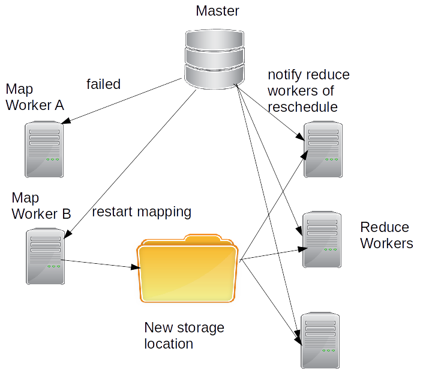
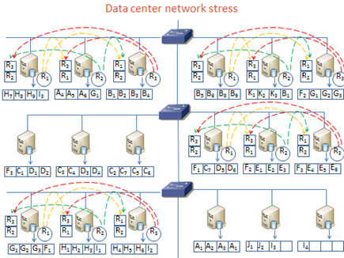
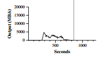
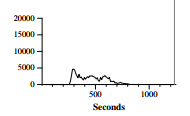

class: center, middle # MapReduce --- # MapReduce: Simplified Data Processing on Large Clusters ### Authors: Jeffrey Dean, Sanjay Ghemawat ### Presenter: Neil Seward --- # Contents 1. Defining Google's Problem 2. The MapReduce Model 3. Implementation of MapReduce 4. Fault Tolerance 5. Additions to the MapReduce Model 6. Evaluating Performance 7. Conclusions --- # Defining Google's Problem - Google needed a new method to work with all of their indexed data.  --- # Defining Google's Problem - The new searching algorithm needed to work across a distributed set of thousands of computers. <br> <br> - These networked computers were considered to be mid-low tier in processing power. --- # Defining Google's Problem The algorithm needed to be relatively simple to implement and understand, but still incorporate for: - fault tolerance - slow network bandwith - hanging processes --- # The MapReduce Model - The MapReduce algorithm takes in a set of key/value pairs as input and produces a different set of key/value pairs as output. ### Input Key | Value ------------- | ------------- 0 | Banana 1 | Banana ### Output Key | Value ------------- | ------------- Banana | 2 --- # The MapReduce Model The MapReduce algorithm has two main functions: - Map - Reduce <br> <br> Both the Map function and the Reduce function can be written differently, depending on the user requirements of the MapReduce function. --- # The MapReduce Model ### Map - The Map function takes a document with a list of values, and emits a transitional key/value pair. <br> <br> <img src="img/map-function.png" style="width: 600px; height: 250px"/> --- # The MapReduce Model ## Map Example ### Input Key | Value ------------- | ------------- words.txt | Banana, Banana ### Output Key | Value ------------- | ------------- Banana | 1 Banana | 1 --- # The MapReduce Model ### Reduce - The Reduce function accepts an intermediate key from the Map function along with the set of values for that key, and emits a subset of the given values. <br> <br> <img src="img/reduce-function.png" style="width: 600px; height: 250px"/> --- # The MapReduce Model ## Reduce Example ### Input Key | Value ------------- | ------------- Banana | {1, 1} ### Output Key | Value ------------- | ------------- Banana | 2 --- # MapReduce Implementation ### Architecture - There are many different implementations of MapReduce for constrasting architectures. <br> <br> - The implementation environment used in the paper is most common application of MapReduce; an environment of thousands of low-end networked computers. --- # MapReduce Implementation ### Components - The MapReduce model uses two main components to carry out commands and to load files for input and to store output. <img src="img/master-worker.png" style="width: 600px; height: 350px"/> --- # MapReduce Implementation ### Components - Master Tasks include: - assign Map and Reduce tasks to workers - updates worker status - tracks file locations - handles faults in workers. --- # MapReduce Implementation ### Components - Worker Tasks include: - performs Map and Reduce tasks - sends updates to master - performs read and write operations to files. --- # MapReduce Implementation ### Specifying Size - Mapping - Mapping tasks are divided up into M segments of input data. - This is used to optimize the size of the input data. --- # MapReduce Implementation ### Specifying Size - Reduce - Reduce tasks read from R intermediary files produced by the partitioning function. --- # MapReduce Implementation ### Splitting - The MapReduce library will first split the input files into M smaller subsets. <br> <br> [1] --- # MapReduce Implementation ### Mapping - Each worker assigned to mapping will read a subset input file and Map intermediate key/value pairs. <br> <br> <img src="img/mapping-step.png" style="width: 400px; height: 300px"/> [1] --- # MapReduce Implementation ### Mapping - Once mapped, these pairs are written as buffers into memory to be sorted. <br> <br> --- # MapReduce Implementation ### Shuffling - The partitioning function read the pairs from memory, sorts the pairs and stores the sorted partitions into local storage. - The locations of these buffered pairs are stored in the master and are passed to the Reduce workers. <br> <br> [1] --- # MapReduce Implementation ### Reducing - The Reduce workers read the sorted pairs from disk and creates subsets from the pairs. <br> <br> [1] --- # MapReduce Implementation ### Reducing - Once sorted, the Reduce workers perform the Reduce function and write the output pairs to output files. <br> <br> --- # MapReduce Implementation ### Output - After appending to output files, the Reduce workers signal the master component for completion. <br> <br> - The master component then notifies the use program of completion, returning the results. <br> <br> [1] --- # Fault Tolerance The MapReduce library has many mechanisms that handle failure in operations and also handle hanging processes. Some failures and bottlenecks that are handled by the library include: - Worker failure - Master failure - Slow network bandwidth - Straggler tasks --- # Fault Tolerance ### Execution States The master component tracks the status of each Map and Reduce worker throughout the execution of the functions. <br> <br> These states include: - idle - in-progress - completed --- # Fault Tolerance ### Worker Failure - If stuck in the same state for too long, the master resets the worker back to idle. --- # Fault Tolerance ### Worker Failure - Map - When a Map worker is determined to be in a failed state, the master resets the worker back to idle. - The output from the Map worker is stored locally and cannot be accessed by the master, so the Map tasks are re-scheduled on another worker. --- # Fault Tolerance ### Worker Failure - Map - Due to the large numbers of workers, tasks can be re-scheduled with ease. <br> <br>  --- # Fault Tolerance ### Worker Failure - Reduce - When Reduce workers fail, they are not re-scheduled due to their output being globally accessible. --- # Fault Tolerance ### Master Failure - The master component is central to the execution of the MapReduce program. - There are no copies of the master component. - When in failed state, the master is aborted and the client program is notified. --- # Fault Tolerance ### Network Bandwidth - The MapReduce model is robust in that it can still perform the function operation on a network with low bandwidth. - The input files for the workers are initially stored as copies across the cluster of computers. --- # Fault Tolerance ### Network Bandwidth - Locality - When a worker fails, the master re-schedules jobs based on the closest machine that has a copy of the original worker data.  [3] --- # MapReduce Additions ### Backup Tasks - When a worker is taking a long time to complete a Map or a Reduce function while in-progress, the master component considers it a straggler. - After straggler detection, the master creates backup executions of the in-progress task. --- # MapReduce Additions ### Backup Tasks - The task is determined to be complete when either the backup task or the original task completes the operation. <br> <br> [2] --- # MapReduce Additions ### Partitioning - When creating inputs for Reduce tasks, a Partition function can be used to evenly distribute partitions. - This is the shuffling step of MapReduce. - *partition = hash(key)**mod**R* --- # MapReduce Additions ### Combining - After Map tasks are finished, a simple combination can be performed after the Map task on the same worker to simplify the Reduce task load. - The combination function works similar to the Reduce function. <br> <br> --- # MapReduce Performance ### Configuration - 1800 machines on network. - Two 2GHz Xeon CPUs. - 4GB RAM. - Two 160GB IDE storage. - 100-200 Gbps network bandwidth. - 1 TB of data. --- # MapReduce Performance ### Grep - Summary - Searches through data for rare three letter combinations. - Input data is split into 64MB peices (M = 15,000). - Output data is single file (R = 1). --- # MapReduce Performance ### Grep - Performance - The entire computation takes 150 seconds (including 60 seconds of startup). --- # MapReduce Performance ### Sort - Summary - Sorts data based on extracted keys from data. - Input data is split into 64MB peices (M = 15,000). - Output data is written to 4000 files (R = 4000). --- # MapReduce Performance ### Sort - Performance (Normal, Input Rate) - This graph shows the rate at which the data is read from input. - All of the reading is completed at around 200 seconds in. --- # MapReduce Performance ### Sort - Performance (Normal, Network Transfer Rate) - This graph shows the rate at which the data is transfered from the Map phase to the Reduce phase. - This happens specifically during the shuffling/partitioning phase. - All of the data is transfered at around 600 seconds in. --- # MapReduce Performance ### Sort - Performance (Normal, Output Rate) - This graph shows the rate at which the data is written to the output files. - All of the data is written at around 850 seconds in. - With startup, this version of sort takes 891 seconds.  --- # MapReduce Performance ### Sort - Performance (No Backup, Input Rate) --- # MapReduce Performance ### Sort - Performance (No Backup, Network Transfer Rate) --- # MapReduce Performance ### Sort - Performance (No Backup, Output Rate) - Most of the data is written before 960 seconds in. - Without backup tasks, there are five stragglers that cause the end point to be at 1283 seconds.  --- # MapReduce Performance ### Sort - Performance (200 Task Killed, Input Rate) - The negative rate is due to information loss during re-scheduling failed tasks. --- # MapReduce Performance ### Sort - Performance (200 Task Killed, Network Transfer Rate) --- # MapReduce Performance ### Sort - Performance (200 Task Killed, Output Rate) - With startup, this configuration of sort completes at 933 seconds in. --- # Conclusions - With the MapReduce library, making simple queries on large sets of data in short periods is very easy to implement. - The additions to the model, such as combining, backup tasks, and network locality make the distributed library even more powerful in terms of processing. --- # References 1. http://xiaochongzhang.me/blog/wp-content/uploads/2013/05/MapReduce_Work_Structure.png 2. http://images.slideplayer.com/14/4413895/slides/slide_13.jpg 3. http://www.sis.pitt.edu/bpalan/research.html